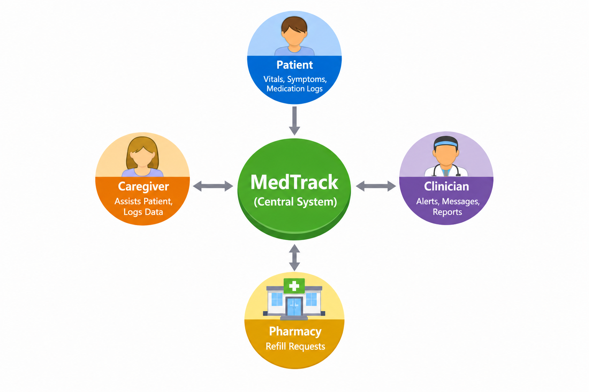

My Projects

Lidu's Eatery Website
A restaurant website created using HTML, CSS, JavaScript, jQuery, and web development technologies.
My Role: Web Developer
Outcome: Created a multi-page restaurant website with navigation, menu items, images, and interactive features.
Completion Date: 2026

MedTrack
A remote patient monitoring and medication adherence system designed to help patients manage medications and health information.
My Role: System Designer
Outcome: Developed requirements and system concepts for monitoring patients and medication adherence.
Completion Date: 2026

React Portfolio Website
A personal portfolio website designed to showcase my skills, projects, services, and experience.
My Role: Web Developer
Outcome: Created a personal portfolio website with multiple pages and interactive features.
Completion Date: 2026